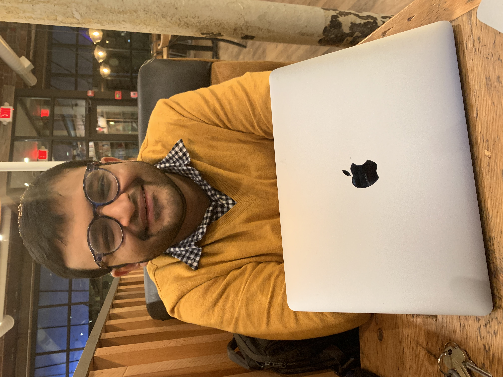

|

|
I am currently a researcher at AWS AI Labs in New York City, where I work on building retrieval and generative models over structured, unstructured, and multi-modal data. Previously, I was a postdoc at the wonderful H2lab at the University of Washington working with Prof. Hanna Hajishirzi. Before that, I completed my Ph.D. advised by Prof. Andrew McCallum as a part of the wonderful IESL lab at UMass Amherst. My Ph.D. thesis was on building neuro-symbolic models of reasoning over knowledge, primarily motivated by case-based reasoning. My research interest lies in building semiparametric models of reasoning applied to structured (graphs, databases, tables), unstructured (text), and multimodal (images, UX widgets) data. I am interested in how new knowledge can be introduced (via nonparametric memories), used/manipulated (via parametric models), as well as synthesized/discovered (via reasoning). Contact: dasrajar [at] amazon [dot] com. For JMLR related queries, please email at managing [at] jmlr [dot] org. |